Core Value
- Performance, Safety, Compliance
- Analytics, Technology, Risk
Mission
- master in software development
- pursue entities relationship
- create social value
Strategy
- market size:
- business model: Competitive Advantage, Market segment size, bayesian probability, PESTAL
- value chain: increase revenue, reduce cost, increase customer satisfaction, improve operation efficiency
- priority: milestone (m1-m4) -> target
- financial model: cost-benefit, NPS, DAU, CR, O/d, AOV, NMV, Revenue, Profit,
- risk assessment: dependency, constraint, change impact, opportunity cost
Problem Statement (critical)
- current state: process and technology
- gap analysis: ask 5 why > root cause (c1-c4)
- capability level
Countermeasure
- initialize milestones (m1-m4) -> resolve root causes (c1-c4) -> target
- improve people, process, tech
- logical architecture, solution architecture
- marketing channel
Success Criteria
- project timeline (m1-m4)
- stakeholder matrix
- quality management
- change management
- A3 Report Format
Escalation
- follow-up, blockers
Summary
- signature
Legal Contract
- Business Consultant Agreement Template (for vendors)
- Non-Competition Agreements Agreement Template (for employees)
- Non-Disclosure Agreement Template (for partners)
- Pricing option, Terms & Conditions (for customers)
- Investor & Startup Term Sheet Template (for investors)
Training Process
- review training priority
- watch video by authors
- study online course, example
- summarize learning in
The Book
[Practical Unix]
Topics
- Setting Up Linux: Shell, Text, Editors, ZSH Globbing
- Input / output redirection:
- Redirecting Output to Another Command's Input
- Redirecting Output to a File
- Redirecting a File to Standard Input
- Tee: Outputting to stdout and a File
- Search and grep: Diff, Find, Grep and Regular Expressions - Intro, Find, Replace, Advanced
- Scripting and permissions
- Network:
- scp - Securely Copy (copy files over a network)
- wget - WWW Get (download files from the internet)
- cURL - Send Requests to Online Resources, Web Request
Modern Unix command
bat: modern ofcatexa: modern ofls, e.g.$exa --git -l --treefd: modern offind, e.g.$fd ^foorg: modern ofgrepjq: sed for json datacheat: cheatsheet, modern ofmantldr: modern ofmanbtm: modern oftop,bottomglances: modern oftopdog: DNS client, modern ofdighyperfine: benchmarking toolgping: modern ofpingcurlie: modern ofcurldust: modern ofdu, disk usage statistic by fileduf: modern ofdu, show disk free spacewrk: monitoring and benchmarktmux: terminal multiplexer: project session-* multi windows -* panes
tmux - terminal multiplexer
mtux new : create a new session
ctrl+b+c/& : create/exit new window
ctrl+b+%/"/x : split pane vertically/horizontally/exit
:set -g mouse on/off
Ctrl + b + Ctrl + s/r : save session/restore
ssh - Send file to remote ssh host
$SSH username@ip-address: login into a remote Linux machine using SSH$put file: upload ‘file’ from local to remote computer$get file: Download ‘file’ from remote to local computer$quit: Logout
tar - compression
$ tar cvzf archive_name.tar dirname/: compress
$ tar xvf archive_name.tar: uncompress
sed - text processor
$sed 's/.$//' filename: Print file content in reverse order
$sed -n '1!G;h;$p' thegeekstuff.txt Add line number for all non-empty-lines in a file
awk - remove duplicate lines using awk
$ awk '!($0 in array) { array[$0]; print }' temp
sort - sort file in ascending order
$sort names.txt
xargs - exectue util
$ls *.jpg | xargs -n1 -i cp {} /external-hard-drive/directory: search all jpg images in the system and archive it.$find / -name *.jpg -type f -print | xargs tar -cvzf images.tar.gz$cat url-list.txt | xargs wget –c: Download all the URLs mentioned in the url-list.txt file
service - Check the status of all the services.
$service --status-all
IO Direction
$cmd < file: Input of cmd from file$cmd1 <(cmd2): Output of cmd2 as file input to cmd1$cmd > file: Standard output (stdout) of cmd to file$cmd > /dev/null: Discard stdout of cmd$cmd >> file: Append stdout to file$cmd 2> file: Error output (stderr) of cmd to file$cmd 1>&2: stdout to same place as stderr$cmd 2>&1: stderr to same place as stdout$cmd &> file: Every output of cmd to file
Pipes
$cmd1 | cmd2: stdout of cmd1 to cmd2$cmd1 |& cmd2: stderr of cmd1 to cmd2
Command Lists
$cmd1 ; cmd2: Run cmd1 then cmd2$cmd1 && cmd2: Run cmd2 if cmd1 is successful$cmd1 || cmd2: Run cmd2 if cmd1 is not successful$cmd &: Run cmd in a subshell
backup dictionary
backup Line data
/Users/mac/Library/Containers/jp.naver.line.mac/Data/Library/Containers
parallels keyboard settings
** cmd+left = home ** shift+cmd+left = shfit+home ** cmd+right= end ** shift + cmd+ right= shift+end ** cmd=ctrl
Reference
VCode setup (if needed)
- rust analyzer, Darcula Theme, gitlens
intellij community setup (default)
- in git panel -> show hash
- update keymap
gitflow4idea plugin setup
- check
push on finish feature - check
push on finish release
popular intellij plugin
- material theme UI
- gitflow integration plus
- gittoolbox: auto fetch
- codestream: issue, code review, PR, feedback, codemark in IDE
- plantuml
- rust, toml, grcov, evcxr plugin: required for rust
- ignore
- CSV
- sonarlint
- docker
- aws
- ideola
- database navigation
- graphql
- terraform
- tabinine AI code
- turn off all unused intellij plugin
codestream code collaboration
- create jira project -> link to github (same name)
- in jira app, github configure -> connect github organization.
- if project is not shown codestream, reinstall codestream intellij plugin
- use codemarks instead of bookmark
task management w/ Github flow on codestream
- create issue
- issue -> start work (move issue to in process & start feature branch)
- commit with jira ID, e.g. WAXC-1, comment with resolves WAXC-1
- create PR
- review and approve merge
- delete remote/feature branch
- mark issue as 'Done'
create mdbook in repo
mdBook init docs: initialized mdbook in docsn: do not add docs in .gitignorecd docsmdBook build: build mdbook in docs
git advance topics
- branching strategy
- pull request
- conflict resolution
- commit message best practices
git client setup
brew uninstall git-flow(if ver 1.4. gitflow installed)brew install git-flow-avh, 1.12.3 (AVH Edition)git config --global user.email "name@mail.com": setup emailgit config --global user.email: check setup email
github repo setup
- create github repo in organization
gh repo clone waxctech/waxctech.github.ioin $home/Repogit remote: if repo has been created in local, add reference link to remote repo to local repo- add member to access repo
- enable github page -> in github > setting > pages > enable github pages, source = /docs
- create github project with automated review workflow
gitflow setup
- on gitflow plugin, select
gitflow init: create gitflow structure, local/develop - push local/develop to remote/develop: due to missing in gitflow4idea plugin
gitflow branching: procedure for each new task
- first thing first: fetch remote and update local
- on codestream plugin, create new issue (label: feature, bug, release, hotfix)
- open gh ticket, assign project
- on gitflow,
Start Feature: usename of issue ticket_#ticket numberin github, e.g. "issue_#1" - commit changes to local/feature branch, do NOT push local/feature
- when work done, always check conflict before PR:
- fetch all
remote - update all
local
- fetch all
- if conflicted, rebase:
- checkout
local/develop - rebase
local/mainonlocal/develop - checkout
local feature/issue_#1 - rebase
local/feature/issue_#1ontolocal/develop - on gitflow,
Publish Feature: push changes from local/feature to remote/feature
- checkout
- on codestream, create Pull Request
- use branch name as PR name
- change base from
maintodevelop - assign PR to project
- perform code review by reviewer
- use
squash and mergedto merge changes from remote/feature to remote/develop - update remote/develop to local/develop
- on gitflow,
Finish Feature: delete feature branch, auto push from local/develop to remote/develop - resolved gh issue would be moved to done column by automation
for
Start Release, repeat the same flow forrelease-v0.1.0but only hotfix is allowed for merging changes from develop should be blocked
commit message best practice
- do not use force push
- only commit changes on the same topic
- commit message:
subject = issue ticket name and #number
<empty line>
Body = detail explanation, diff than before, reason for changes, anything to watch out for?
resolves: #ticket_number
branching strategies: gitflow vs github flow
- use gitflow for multi teams, complex workflow before go-live
- using github flow for few branches small commits but required high quality QA test automation
- long running branch (main or dev) vs short lived branches (e.g. feature)
.ignore vs .git/info/exclude
- files/ignore rules that have to be universally ignored should go in .gitignore
- otherwise files that you want to ignore only on your local clone should go into .git/info/exclude
conflict resolution in github flow
- github flow w/ local merge (remote main > local feature > local main > github flow)
- if remote is blocked, do local merge first to keep local main with the latest changes
git checkout featuregit diff maingit merge main
undo a conflict and start over
git merge --abortorgit rebase --abort
temp storage for changes instead of commit
git stash
undo changes
git revert(preferred) append commit applies inverse changesgloga// git log with graph decorator
folk vs clone
- git folk is to create a copy of repo from one github account into your github account
- clone is from your repo to local.
fetch vs pull
- fetch: only check and retrieve meta data from remote (without code merged)
- pull: copy change from remote (with code merged)
- update: intellij feature which combines fetch + pull
github flow (deprecated by gitflow)
- workflow: remote main > local feature > remote feature > remote main > local main
git branch: check the current branchgit checkout -b feature-PLAT-1: - b create a new branchfeature-<jira project key>-<jira ticket number>: branch naming conventiongit checkout feature-PLAT-1: switch to existing feature branch- write code for feature platform ticket
git status: list all changes since last commit. alias:gstgit add .: if newly created, stage changes in local. alias:gaagit commit -am "resolved #PLAT-1": commit changes in local using comment convention 1. alias:gcamgit diff main: compare difference between feature and main. alias:gd- clean up your code with an interactive rebase before submitting your pull request.
git push -u origin feature-PLAT-1// push changes to remote; origin refers to remote/feature repo- create Pull Request on github by author
- perform quality metrics and change review on github by reviewer
- merge pull request from remote/feature to remote/main by approver
git checkout main// switch back to main branchgit pull main// sync changes from remote/main to local/maingit branch -d feature-PLAT-1// delete local feature branch
Reference
interactive git cheat sheet basic git video by freecodecamp advanced git video by freecodecamp git tutorial by gitkraken merge vs rebase how to gitflow: git tutorial by altlassian gitflow tutorial gitflow4idea plugin good commit message
all languages and patterns [Kotlin Design Patterns and Best Practices, 2022] [Programming with Types,2019] [TypeScript Quickly 1st Edition // practical example with deno, blockchain, react and vue] [Hands-On Design Patterns and Best Practices with Julia: Proven solutions to common problems in software design for Julia 1.x]
rust modern programming focus
- speed, stability, concurrency, functional programming
Rust Example
fn main() { let number = 5; print!("{}", number); }
install rustup
curl --proto '=https' --tlsv1.2 -sSf https://sh.rustup.rs | sh
update rustup
rustup update
cargo new project
cargo new hello_world --bin --vcs git
mdbook
mdbook build
print out struct
#[derive(Debug)]
println!("{:?}", user);
training path
- cheat sheet
- overview - Rust in Motion
- MSFT training 5.5h
- The book & tour of rust
- Advance Rust for Rustaceans
- basic Rust cook book
- complete Rust by Example & extended
- Rust Design Pattern
- CS242 Programming Languages (in Rust)
- machine learning in Rust
- hacking in Rust
- Network Programming with Rust - parsing JSON with serde, networking, http, tcp, udp with tokio
- MEAP - Rust Web Development
- downstream service - Zero to production in rust
- microservice in AWS as hyper, Tokio, and Actix, REST, Docker, Reactive, AWS lamdba
- 24 days of rust
video course
- 24h intermediate - crust of rust -lifetime, macros, iterators, smart pointers, channels, sort & algro, subtypes, variance, drop check, atomics, mem ordering, dispatch, await, function, trait
- 7h data structure and algorithm
- str, string, complexity, & sorting, linked list & binary trees, graph, hashmap, entity component, persistence.
- 3h CLI search, parser, chat, blog, tokio, actix, db
- 1h real-time service - chat with tokio
- 6h upstream service - advance data stream in Rust
- 7h process - build HTTP server
- 12h batch job - Build a Stock-Tracking CLI With Async Streams in Rust
- 3h System programming by Nathan Stocks
- 3h game development by Nathan Stocks
- 2h reusable code by Shing Lyu - functional, generics, std
- 3h Eduonix Learning - Rc and ARC, trait, error handling, serde
Framework
rust serverless in aws rust in cloudflare worker actix web framework data class in rust meilisearch engine sonic search simulation modelling enso - low-code data science weave - k8s & gitops, firecracker linkerd: servicemesh TiKV - tx KV database xsv - process cvs file arload - arweave uploader CQRS-ES
Integration with beam and jvm
Rustler - calling Rust from elixir good article on Rust vs erlang Mnesia real time database Rust and the JVM
Asynchronous programming
Futures and async. This is: tokio, futures-rs and async-std. Threadpools: Rayon and threadpool. Thread-safe data structures: crossbeam. The first category is about waiting for a whole bunch of things at once. For example if you have a web server, you spend most of the time waiting for I/O to send and receive a message. Futures allow you to compute other stuff while you wait for the response. The second category is about doing a whole bunch of things at once. The rayon library is based on the principle of solving problems with divide and conquer. You have a problem. You split it up into smaller problems, which can be run on separate threads in a thread pool. Then you combine the results and you have your answer. As for the threadpool library, it also let's you spawn many tasks on a thread pool, but it's more primitive. Crossbeam just gives you various data structures and algorithms that are useful when doing things on multiple threads. For example it provides various queues that allow pushing and popping items from several threads without a mutex. Asychornous Runtime Rayon - parallel programming actors with tokio eventador - lock free event bus inspired by LMAX Disruptor LMAX disruptor pattern
Dapr, wasmedge runtime
js replacement wasm rust+wasm seed wasm wasmedge dapr wasm WASMEdge tutorial
Reference
rust forge - docs for rust lang rust compiler development rust internal forum rust exercises Rust Awesome List web framework comparison book list Finite State Machine state machine pattern standard library edition guide rustdoc book cargo book rustc book compiler error index CLI app in Rust WASM book creative projects - 2D game 100 rust project The Difference between Functional Programming and Object-Oriented Programming
are we yet list
are we yet list async distributed IPFS machine learning
test automation
General purpose test automation tools Test automation and software testing as services Java test automation load test
Kotlin Multi platform
KMM agency DGS - graphql server in kotlin
Rust & Kotlin
kotlin vs rust: The State of Developer Ecosystem 2021 cool app written in haskell immutability in java functional in kotlin
Common Usage and Example
- Architecture: C4 modelling, AWS, Azure, kubernetes, Elastics
- Programming: class, sequence, activity, parallel processing, state machine, process timeline, swagger open API
- Build & Configuration: cargo, gradle, terraform, ansible
- Network: DNS, trace route, Firewall, routing, apache log, gpg/pgp, sitemap, isp mapper, tcpdump
- Data translation: json, db schema, Text read stdin, xml sql
- AI: keras neural network, Word formation, Topic extraction
- Profiler
- Knowledge map
- Domain storytelling
- Org chart WBS
- Gantt chart
- Material design icon
- Directed/ undirected graph, Mindmap
Presentation slide using markdown
Plantuml Installation
$cargo install mdbook-graphviz//change preprocessor.rs to- pub static INFO_STRING_PREFIX: &str = "graphviz";$cargo install mdbook-plantuml: require to change source code for "graphviz"$brew install graphviz: current 3.0.0$brew install plantuml: current 1.2022.5- for C4, remove any string after @startuml, otherwise mdbook will not render
install mdbook preprocessor in book.toml
[preprocessor.plantuml]
plantuml-cmd="/usr/local/bin/plantuml"
Container View
- sample with links, showing connection protocol between services
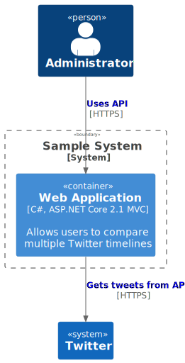
System Context View
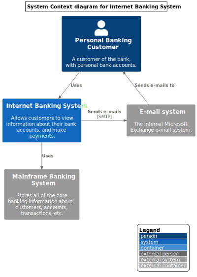
Container View - shows application, service, microservice, etc
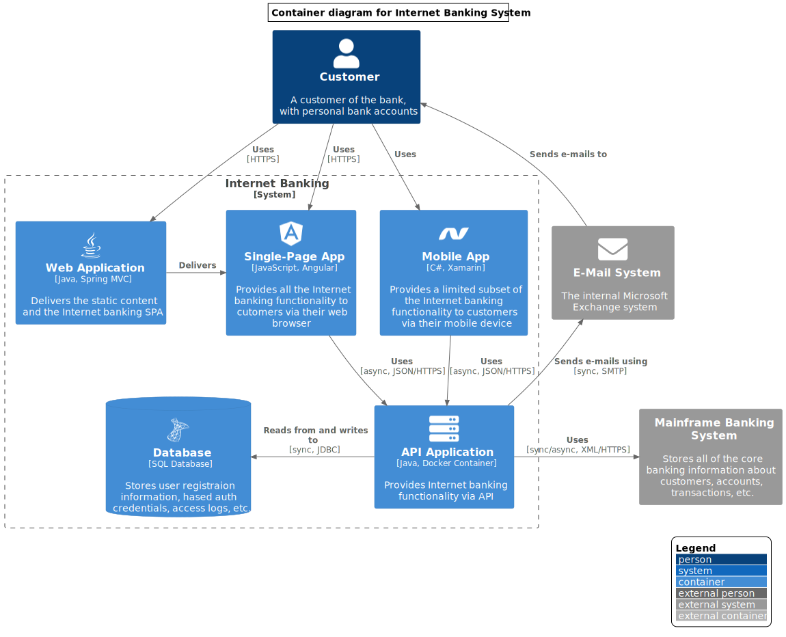
Component View
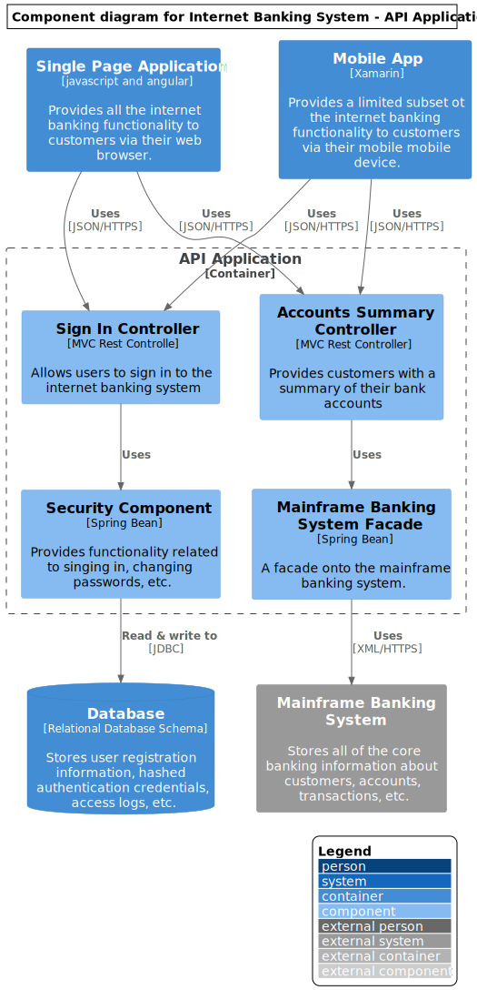
System Landscape View
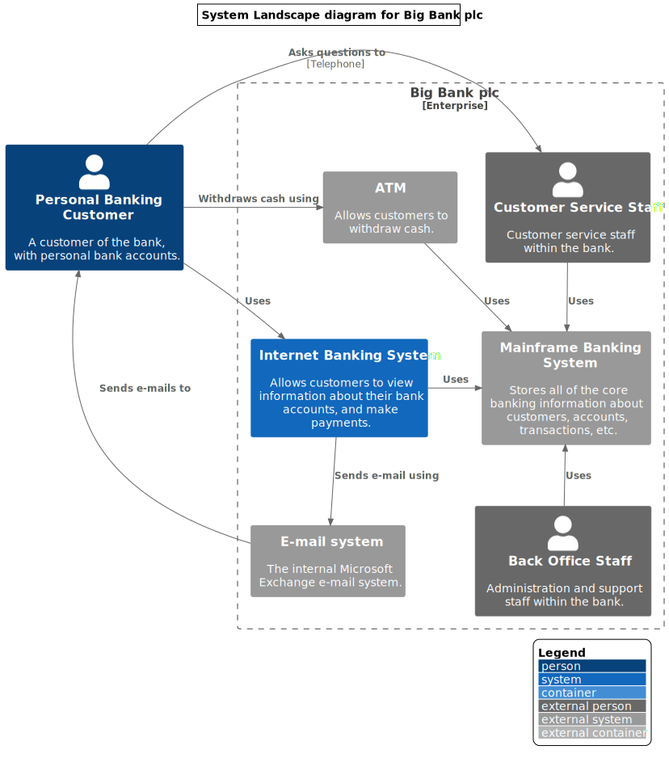
Dynamic View
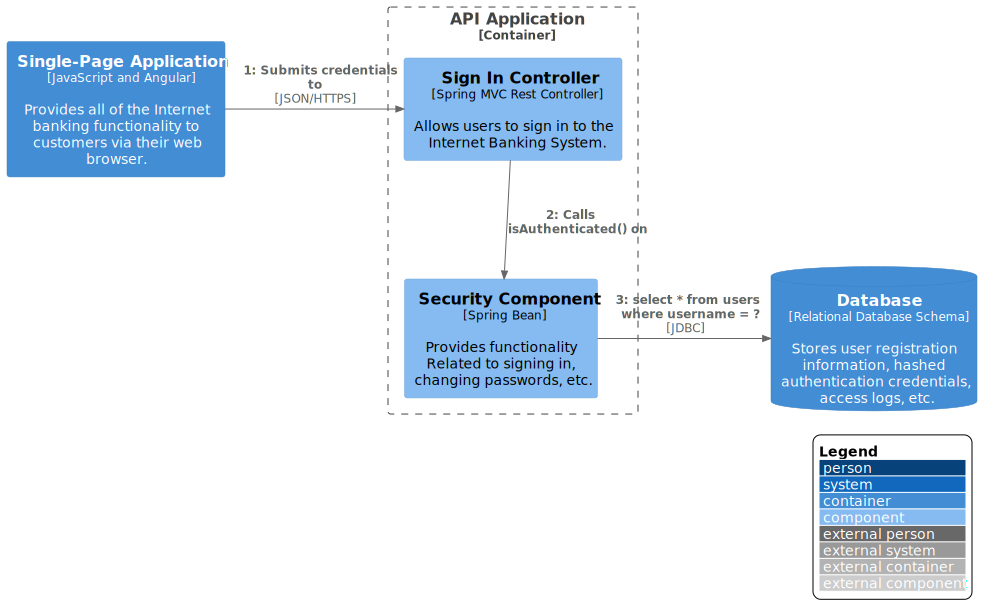
Deployment with Detail View
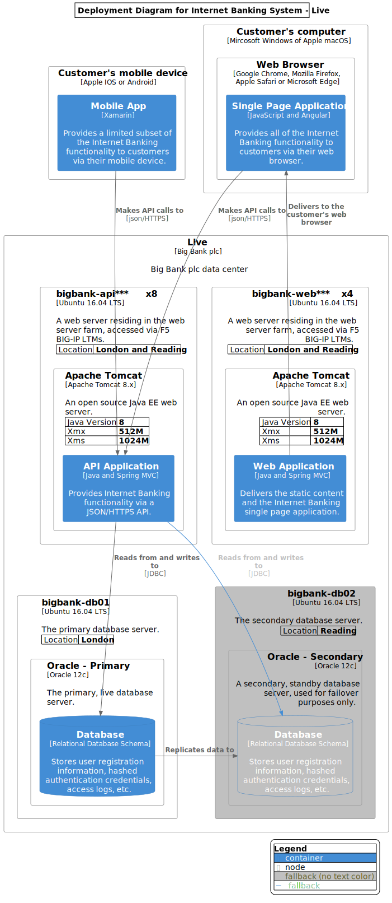
Container View on Messaging Bus
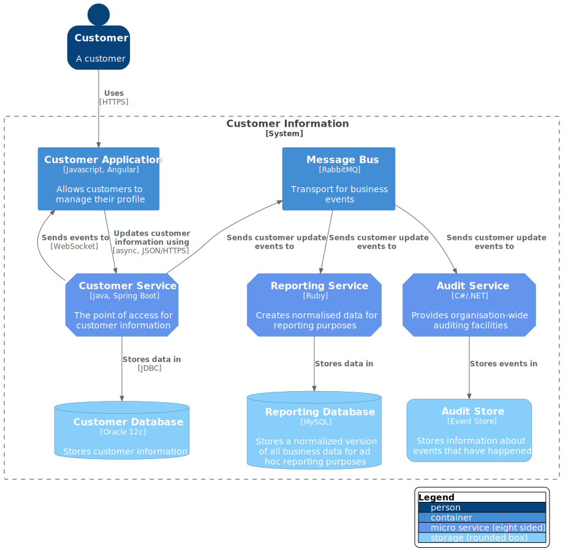
Sequence
- used for complex flow on calling external system
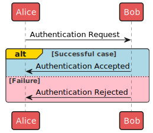
Class
- used for design pattern
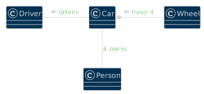
Activity / Workflow
- used for complex workflow
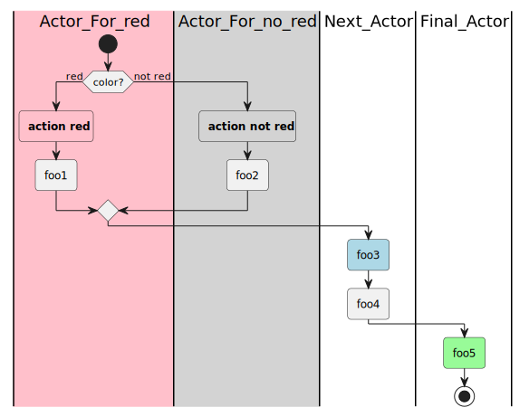
Parallel Processing
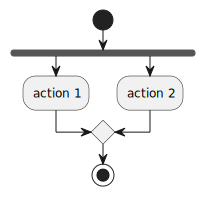
State Machine
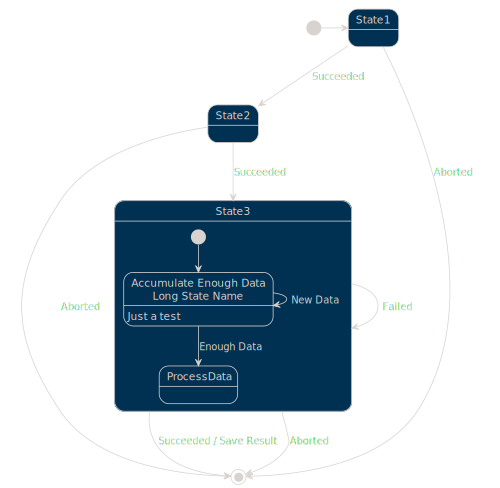
Timeline
- used to show lead time on each process
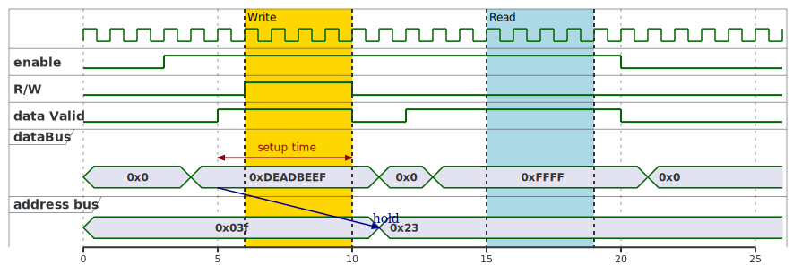
Network
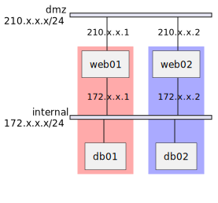
JSON Specification
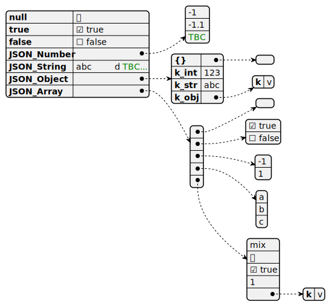
DITAA - DIagrams Through Ascii Art
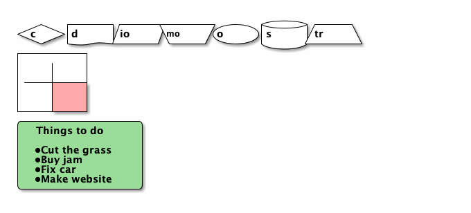
Gantt Chart
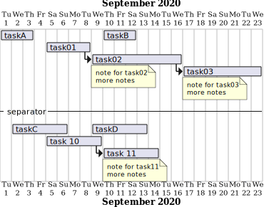
Mindmap
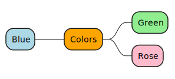
Org Chart / WBS
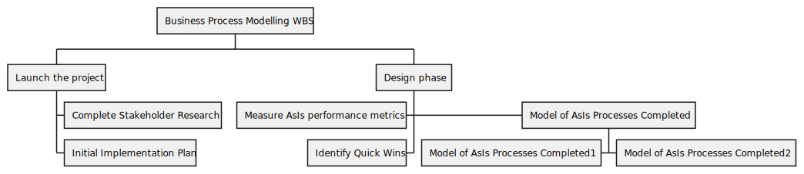
Amazon Labs AWS
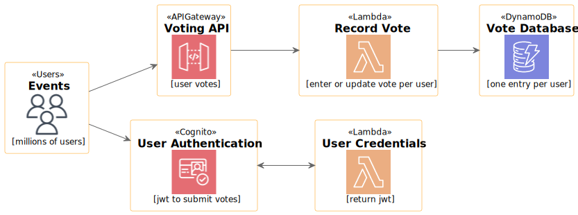
Azure Cloud
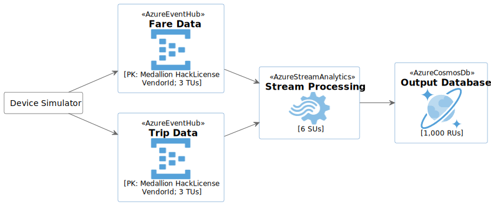
Elastic Search - ELK
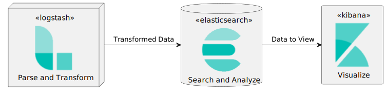
Kubernetes
PlantUML rendering error: PlantUML did not generate an image, did you forget the @startuml, @enduml block (/usr/local/bin/plantuml -tsvg -nometadata /var/folders/th/c_6w7gtd299fh13whmfhgsq80000gn/T/.tmp7QpP0Y/bea6074f3e96ab33929173613e1100c0b6b7bb2f.puml)?
Domain Storytelling
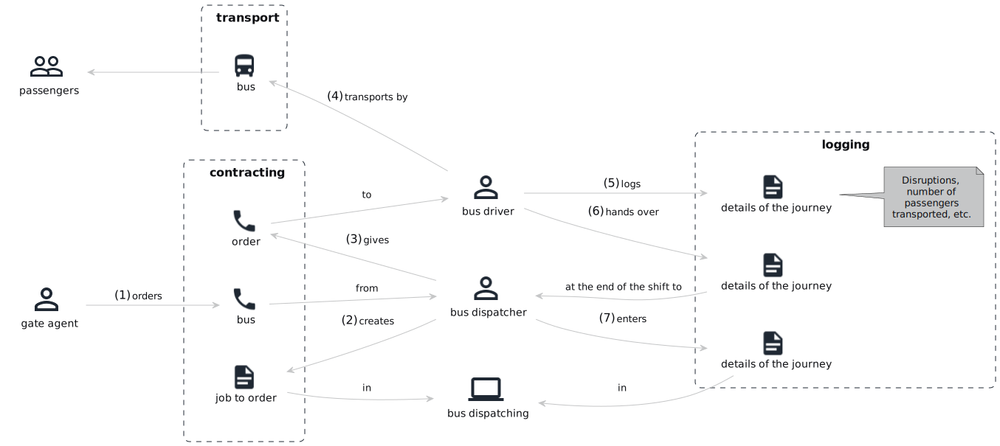
Material Design Icon
Directed Graph
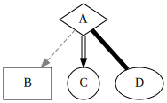
undirected Graph
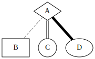
transparent color map
Maths
$$ \mu = \frac{1}{N} \sum_{i=0} x_i $$
PlantUML Themes:
list of official theme gallery
- mars
- blueprint
Reference:
- C4 core diagram
- C4 modelling
- graphviz
- graphviz online editor
- cloud arh
- C4-PlantUM
- plantuml
- aws plantuml
- asciidoc
- VISUALIZATION GRAMMARS
- vega-lite
- kroki - using it to support vega ?
- mermaid demo
- cargo dependency graph
- Tutorial on Plantuml
JULIA
[Algorithms with JULIA: Optimization, Machine Learning, and Differential Equations Using the JULIA, 2022] Statistics with Julia:, 2021 [Numerical Linear Algebra, 2018) 1st ed. 2018 Edition, Kindle Edition] [Numerical Linear Algebra with Julia, 2021] CALCULUS WITH JULIA jupyter python & julia scientific writing
Mathematics Courses
Phase I
- khan pre-calculus - 1m
- MIT 18.01 single variable calculus 2010 - 2m
- MIT 6.042j mathematics for computer science 2019 - 2m
Phase II - optimization
MIT 18.02 Multivariable Calculus 1: Vectors and Derivatives MIT 18.02 Multivariable Calculus 2: Integrals MIT 18.031 Introduction to Differential Equations, 5 courses //intro, 2x2, linear aglebra, fourier series, laplace transform
Phase III - algorithm
Algorithms: Design and Analysis, Part 1 princeton
Prob and Statistics
Phase IV
- MIT 18.085 computational science and engineering I 2008
- MIT 18.086 mathematical methods for engineers II 2006
- MIT 18.404j THEORY OF COMPUTATION 2020
- ADVANCED DATA STRUCTURES
18.065 MATRIX METHODS IN DATA ANALYSIS, SIGNAL PROCESSING, AND MACHINE LEARNING
MIT 18.100 intro to analysis convex optimization, stanford
Math simulation
trigo: linear equation: quadratic equation: cube/curve fitting: fourier: vector equation:
scilab // domain: signal processing, control, statistics, optimization GNU Octave: https://octave.org/ // compatible with Matlab scripts
JASP // Frequentist analyses, Bayesian analyses https://octave.org/
#largest open-source algorithm library (https://the-algorithms.com/)
graduated CS course:
information/compution/complexity theory computation, modelling, simulation:
INTRODUCTION TO NUMERICAL METHODS //advance linear algebra, caching for nonlinear optimization // prequestise: 18.01,02,03
DYNAMIC PROGRAMMING AND STOCHASTIC CONTROL // applied probablity, advance analysis
DYNAMIC SYSTEMS AND CONTROL //system optimziation
INTRODUCTION TO MATHEMATICAL PROGRAMMING // linear optimization > CONVEX ANALYSIS AND OPTIMIZATION
DATA, MODELS, AND DECISIONS // managment science
AI: PRINCIPLES OF AUTONOMY AND DECISION MAKING QUANTIFYING UNCERTAINTY
Algorithms and Data Structures Level: Graduate
NETWORK OPTIMIZATION // subclass of linear programming
COMPUTER ALGORITHMS IN SYSTEMS ENGINEERING // data structure, divide and conqurer, dynamic programming, branch and bound, linear and non-linear optimization, Approximate Queues and Network Designs
Computer Science Algorithms and Data Structures Systems Engineering Computational Modeling and Simulation Systems Optimization
Greek Numbers
Alpha
the first angle in a triangle, opposite the side A the statistical significance of a result the false positive rate in statistics ("Type I" error) the α-conversion in lambda calculus the independence number of a graph
Ββ (beta)
Β represents the beta function the second angle in a triangle, opposite the side B one root of a quadratic equation, where α represents the other the standardized regression coefficient for predictor or independent variables in linear regression (unstandardized regression coefficients are represented with the lower-case Latin b, but are often called "betas" as well) the false negative rate in statistics ("Type II" error) β-reduction in lambda calculus
#Γγ (gamma)
the gamma function, a generalization of the factorial the modular group, the group of fractional linear transformations the gamma distribution, a continuous probability distribution defined using the gamma function the neighbourhood of a vertex in a graph the stack alphabet in the formal definition of a pushdown automaton the third angle in a triangle, opposite the side C the Euler–Mascheroni constant in mathematics
Δδ (delta)
Δ represents: a finite difference a difference operator a symmetric difference the Laplace operator the angle that subtends the arc of a circular curve in surveying the determinant of an inverse matrix the maximum degree of any vertex in a given graph the difference or change in a given variable, e.g. ∆v means a difference or change in velocity
/ delta represents: percent error a variation in the calculus of variations
the minimum degree of any vertex in a given graph
Εε (epsilon)
a small positive quantity; see limit a random error in regression analysis the absolute value of an error[3] in set theory, the limit ordinal of the sequence {\displaystyle \omega ,\omega ^{\omega },\omega ^{\omega ^{\omega }},\dots } \omega ,\omega ^{\omega },\omega ^{\omega ^{\omega }},\dots in computer science, the empty string expected value in probability theory and statistics
Ζζ (zeta)
the Riemann zeta function and other zeta functions in mathematics
Ηη (eta)
Information theoretic (Shannon) entropy \eta represents: the partial regression coefficient in statistics elasticities in economics noise in communication system models η-conversion in lathe first Chebyshev function in number theory mbda calculus
Θθ (theta)
an asymptotically tight bound related to big O notation.
in set theory, a certain ordinal number in econometrics and statistics, a space of parameters from which estimates are drawn
\theta (lowercase) represents: a plane angle in geometry in mathematical statistics, an unknown parameter
Ιι (iota)
an inclusion map in set theory
#Κκ (kappa)
the kappa curve, a two-dimensional algebraic curve the condition number of a matrix in numerical analysis the connectivity of a graph in graph theory
Λλ (lambda)
the von Mangoldt function in number theory the set of logical axioms in the axiomatic method of logical deduction in first-order logic a diagonal matrix of eigenvalues in linear algebra a lattice \lambda represents: function expressions in the lambda calculus a general eigenvalue in linear algebra the expected number of occurrences in a Poisson distribution in probability the arrival rate in queueing theory the average lifetime or rate parameter in an exponential distribution the mean or average value (probability and statistics) the Liouville function in number theory the Carmichael function in number theory a formal system in mathematical logic
Μμ (mu)
the population mean or expected value in probability and statistics the service rate in queueing theory
Νν (nu)
degrees of freedom in statistics the matching number of a graph
Ξξ (xi)
a random variable universal setca
Οο (omicron)
big O notation (may be represented by an uppercase Latin O)
Ππ (pi)
\pi represents: Archimedes' constant, the ratio of a circle's circumference to its diameter the prime-counting function profit in microeconomics and game theory inflation in macroeconomics, expressed as a constant with respect to time the state distribution of a Markov chain in reinforcement learning, a policy function defining how a software agent behaves for each possible state of its environmentin in statistics, the population proportion
#Ρρ (rho) one of the Gegenbauer functions in analytic number theory. the correlation coefficient in statistics the utilization in queueing theory the rank of a matrix #Σσς (sigma) Σ represents: the summation operator the covariance matrix \sigma represents: the divisor function in number theory the real part of the complex variable s = σ + i t in analytic number theory the sign of a permutation in the theory of finite groups the population standard deviation, a measure of spread in probability and statistics
Ττ (tau)
\tau represents: Ramanujan's tau function in number theory a type variable in type theories, such as the simply typed lambda calculus in topology, a given topology the golden ratio 1.618... (although φ (phi) is more common)
Φφ (phi)
the reciprocal of the golden ratio (represented by φ, below), also represented as 1/φ \phi represents: the golden ratio 1.618... in mathematics, art, and architecture the probability density function of the normal distribution in statistics
Χχ (chi)
\chi represents: the chi distribution in statistics ( {\displaystyle \chi ^{2}} \chi ^{2} is the more frequently encountered chi-squared distribution) the chromatic number of a graph in graph theory the Euler characteristic in algebraic topology
Ψψ (psi)
a quaternary combinator in combinatory logic the reciprocal Fibonacci constant
Ωω (omega)
in probability theory and statistical mechanics, the set of possible distinct system states \omega represents: in probability theory, a possible outcome of an experiment
Iota (i), Iēsoûs (Ἰησοῦς), "Jesus" Chi (ch), Khrīstós (Χρῑστός), "anointed" Theta (th), Theoû (Θεοῦ), "of God", the genitive singular of Θεóς, Theós, "God" Upsilon (y or u), (h)uiós[11] (Yἱός), "Son" Sigma (s), sōtḗr (Σωτήρ), "Savior"
black box theory
A General Black Box Theory black box The Application of Black Box Theory to System Development, 2014
Maths Notations
symbols operations relations Mathematics For Machine Learning
real time bidding for adv
- Control theory - stochastic optimal control model (based on differient equation)
- Probability - Poisson process, a random variable, Bayesian probability
- Optimal control theory - Hamilton–Jacobi–Bellman equation
- Queueing theory - fluid limit
real time fraud detection - youtube
Fraud Detection with Graph Neural Networks(https://www.youtube.com/watch?v=MZGuz-o7Fl0&t=134s) GCP: https://www.youtube.com/watch?v=qQnxq3COr9Q&t=847s spark - Building a Fraud Detection Platform using AI and Big Data(https://www.youtube.com/watch?v=pIfDlQt6HPo) neo4j - [Amazon SageMaker for Fraud Detection](Fraud Detection in Real Time with Graphs (https://www.youtube.com/watch?v=AeNufTq1W5I)) **AWS - (https://www.youtube.com/watch?v=wzwkLV9gDXk) use case - paypal using kakfa+spark: https://www.youtube.com/watch?v=9B7QbkczO4U&t=1453s use case - featurespace, Building a Real-time Banking Fraud Detection System (https://www.youtube.com/watch?v=cOzLO37mkwk) use case - booking.co using spark+esper: (https://www.youtube.com/watch?v=UcVLfl4kCF0&t=1456s) use case GuardianAnalytics - Real time Digital Banking Fraud Detection
anomaly detection
Anomaly Detection: Algorithms, Explanations, Applications, MSFt research(https://www.youtube.com/watch?v=12Xq9OLdQwQ) flink + salesforce - https://www.youtube.com/watch?v=D4kk1JM8Kcg&t=211s spark streaming - https://www.youtube.com/watch?v=0GNRpPaGrMk&t=722s AWS elastics search - https://www.youtube.com/watch?v=UyBmhVdGGz0 Machine Learning for Real-Time Anomaly Detection in Network Time-Series Data - Jaeseong Jeong AWS re:Invent 2017: Real-Time Anomaly Detection Using Amazon Kinesis (ABD335)(https://www.youtube.com/watch?v=NMFvBeKFCHM) Allison Wang [Robinhood] | How Robinhood Built Real-Time Anomaly Detection | InfluxDays SF 2019 Real-time Anomaly Detection Architecture, kafka(https://www.youtube.com/watch?v=Mj1oHwJ7i2o)
https://www.youtube.com/watch?v=Aeg5yEBuqgM&list=PLbuAq6UI2Ch-mkAmXctxeOlJ3IUZuA8OS Real-Time Anomaly Detection in Data Centers using an Evolving Fuzzy Approach - IEEE WCCI 2020(https://www.youtube.com/watch?v=ghnTk3mnKG8) Unsupervised real-time anomaly detection and root cause estimation by Aitor Landete and Pablo Mateos, 2020(https://www.youtube.com/watch?v=1OSCF-pNwQk) Real-time anomaly detection system for time series at scale(https://www.youtube.com/watch?v=oVXySPH7MjQ)
security practices
-
use yubikey hardware (backup) key and authenticator OTP by default dev guide on webauthn, OTP, U2F, oath, PGP, PIV,
-
https://developers.yubico.com/ Using Your YubiKey as a Smart Card in macOS
sc_auth pairing_ui -s enablesc_auth pairing_ui -f -
access site via desktop app, bookmark, not google search yubikey auth resource zero knowledge NIST security as code open source secruity tools
-
Why developers dislike security—and what you can do about it
international password standard
Password Statistics in 2022 – How to Save & Protect Your Data
https://www.lightbluetouchpaper.org/2010/07/27/passwords-in-the-wild-part-i-the-gap-between-theory-and-implementation/ https://nakedsecurity.sophos.com/2016/08/18/nists-new-password-rules-what-you-need-to-know/ https://csrc.nist.gov/ https://www.liquidweb.com/kb/top-10-2019-password-security-standards/ (https://wpengine.com/resources/passwords-unmasked-infographic/) https://www.troyhunt.com/science-of-password-selection/ https://en.wikipedia.org/wiki/Password_strength
fraud and EU compliance
https://www.natlawreview.com/article/eu-blow-against-black-box-and-road-map-to-compliance https://seon.io/resources/gdpr-compliance-in-fraud-detection/ https://www.prnewswire.com/news-releases/eagleai-saas-platform-for-fraud-detection-compliance-and-trading-risk-management-is-now-available-in-aws-marketplace-301370924.html PSD2 compliance fraud trend Implementation of Effective Measures against Fraud and Illegal Activities in Cohesion Policies (https://eucrim.eu/articles/implementation-effective-measures-against-fraud-and-illegal-activities-cohesion-policies/)
articles on FDP market opportunity
#DID: Understanding the European Self-Sovereign Identity Framework (ESSIF) – Daniël Du Seuil and Carlos Pastor – Webinar 32 (https://ssimeetup.org/understanding-european-self-sovereign-identity-framework-essif-daniel-du-seuil-carlos-pastor-webinar-32/) EBSI
Fraud Detection Market Size
A typical IT service deployment may cost between $75 to $300 per users 1 1: https://www.industryarc.com/Research/IT-Services-Market-Research-501180
Global Fraud Detection and Prevention Market to Reach $46.4 Billion by 2026 2 2: https://www.prnewswire.com/news-releases/global-fraud-detection-and-prevention-market-to-reach-46-4-billion-by-2026--301499029.html
The global fraud detection & prevention market was valued at $29.80 billion in 20213 3: https://www.alliedmarketresearch.com/fraud-detection-and-prevention-market
https://www.alliedmarketresearch.com/fraud-detection-and-prevention-market https://www.marketsandmarkets.com/Market-Reports/fraud-detection-prevention-market-1312.html market statistics [financial im
Anomaly Detection
netdata Unsupervised real time anomaly detection Deep Learning for Anomaly Detection A Comparative Evaluation of Unsupervised Anomaly Detection Algorithms for Multivariate Data Deep Learning for Anomaly Detection: A Review open source anomaly detection The Numenta Anomaly Benchmark (NAB)
System Dynamics
Mathematics behind System Dynamics MIT course
Fraud Detection
The 8 Best GitHub Projects for Fraud Detection and Prevention
opensource fraud detection
h2o open source AI model training, deployment , POJO for real-time scoring
fault detection isolation - FDI
wso2 fraud detection reference architecture
awesome fraud detection list
aws tutorial
building fault detection system using redis
 redis fraud detection whitepaper
NASA - real-time-fault-detection using kafka
redis fraud detection whitepaper
NASA - real-time-fault-detection using kafka
impact due to fraud 6% revenue lost due to fraud, 1% to 5% profit spending on fraud average 5% lost on annual revenue
Key Market Players by report
INTERNATIONAL BUSINESS MACHINES CORPORATION NCR CORPORATION (ALARIC SYSTEMS LIMITED) ACI WORLDWIDE, INC. BAE SYSTEMS, INC. FAIR ISAAC CORPORATION ORACLE CORPORATION SAP SE SAS INSTITUTE INC. Precisely LexisNexis
Non-Fungible Token (NFT) - Fraud and Money Laundering Risks of Emerging NFT Technology and Trade
Architecture Decision Record
madr structurizr LADR Decision record template for business case adr tools DOCUMENTING ARCHITECTURE DECISIONS Scaling Software Architecture via Conversations: the Advice Process Unit test your Java architecture
Client Development
native app Tailwind CSS: next.js: graphQL client: graphQL server -> neo4j: graph router layer- Apollo Federation: awake netlify CMS template: nuxt serverless template: Creating Dynamic Routes in a Nuxt Application Jamstack Templates A Jamstack framework for Vue.js supabase - next.js for real-time app
Application: WSO2 API manager + ESB
wso2 How to build a real-time, event-driven information system with WSO2 API Manager and Kafka WSO2 Choreo cloud API marketplace wso2 reference architecture
Application: High Frequency Trading
Algorithmic Trading System
Algorithmic Trading System
performance talk by Martin Thompson
modularity talk by Kirk Knoernschild
financial trading
how to design HFT
automated trading system
Application: LMAX / Financial Exchange
financial exchange trading floor achitecture intro Processing 1M tps with Axon Framework and the Disruptor Disruptor The LMAX Architecture LMAX - How to Do 100K TPS at Less than 1ms Latency mechanical sympathy books on epoll, kqueue, IOCP Concurrency with LMAX Disruptor – An Introduction Modern Trading Applications Architectures: An Overview Of The LMAX Disruptor Pattern And Project Reactor LMAX vs actor pattern
Application: Search Engine
1 search engine 2 3 4 5 6 7 8 9 10 11 12 13
DZone ref-cards
bpm apache camel CI CI server DDD integration pattern scalability machine learning
Popular Cheatsheets
Cheat Sheet AWS big 0 notation computer science theory design pattern google search HA Proxy kubernetes neural network graph NNG regular expression SSL VS Code cheat sheet intellij cheat programming idioms
Awesome lists
public datasets hacking scalability GitHub awesomeness vscode design pattern kubernetes algorithms microservices aws
Papers:
Turing machine wiki: List of important publications in computer science github: The System Design Primer
Technology Trends 2022
Software Architecture and Design InfoQ Trends Report—April 2022
Majority
Reactive programming DDD+EDA: CQRS, ES, service mesh Modular monolith Correctly built distributed system Actor model GraphQL Serverless Functional programming
Adopters
ADR Dapr Webassembly Security, resilience, observability Microfrontend asyncAPI Workflow automation platforms Low-code
Innovators:
eBPF GraphQL Federation Data Mesh Policy as code Blockchain HTTP/3
Important papers
Can programming be liberated from the von Neumann style? The algebra (and calculus!) of algebraic data types Differential Calculus with Datatypes the hole story [E. W. Dijkstra. Go To Statement Considered Harmful. Cacm, Mar. 1968] https://en.wikipedia.org/wiki/Considered_harmful#:~:text=Considered%20harmful%20was%20popularized%20among,the%20day%20and%20advocated%20structured [N. Wirth. Program Development by Stepwise Refinement. Cacm, April 1971] [D. L. Parnas. Information Distribution Aspects of Design Methodology. IFIP Congress, 1971] [B. Liskov. A Design Methodology for Reliable Software Systems. FJCC, Dec. 1972] [O-J. Dahl and C.A.R. Hoare. Hierarchical Program Structures. Structured Programming, Academic Press, 1972] [J. H. Morris. Protection in Programming Languages. Cacm. Jan. 1973] [B. Liskov and S. Zilles. Programming with Abstract Data Types. ACM Sigplan Conference on Very High Level Languages. April 1974] [Abstraction Mechanisms in CLU, B. Liskov et al, CACM August 1977] [B. Liskov. Data abstraction and Hierarchy. Sigplan Notices, May 1988 [ B. Liskov and J. Wing. A Behavioral Notion of Subtyping. ACM Toplas, Nov. 1994]
- Parnas_71-Information_Distribution_Aspects_of_Design_Methodology.pdf
- CS-575 Software Design - Papers
- On the evaluation of the Bunch search-based software modularization algorithm, 2008
- On the Automatic Modularization of Software Systems Using the Bunch Tool, 2006
Modular Articles
Modular Java Apps - A Microkernel Approach, 2012 How Can We Measure Our Software’s Modularity and Dependencies? Software Modularity: an introduction to Strategic Software Modularization,By Karl Bråtegren flow based programming
Babara Liskov Papers
- QCon, The Power of Abstraction. 2013
- Modularity based on abstraction is the way things are done
- The Power of Abstraction, 2009
- Byzantine birthdays. 2011
- Virtual HLF 2020: Barbara Liskov. 2020
- Reflections on Programming Methodology. 2020
Modularization Papers & Books
- stanford CS 190 - modular design //Chapters 4-7, 14 of book
- **A Philosophy of Software Design, 2nd Edition by John K. Ousterhout, 2021
- **18 Patterns of Modular Architecture by Kirk Knoernschild, 2013
- **Software Specification and Design: An Engineering Approach
- **Software Design X-Rays by Adam Tornhill
- The Modular Way (kindle only)
- Design It!: From Programmer to Software Architect
- Strategic Monoliths and Microservices
- uncle bob-The Principles of OOD
- book: Software Mistakes and Tradeoffs by Tomasz Lelek, Jon Skeet
Springer Research Paper
Source Code Modularization: Theory and Techniques,2017 Emergent Interfaces for Feature Modularization (SpringerBriefs in Computer Science), 2014 ***Interdisciplinary Optimization of Modularization, 2022 Growing Modular: Mass Customization of Complex Products, Services and Software 2005th Edition
Modularity Software Design
Software, Faster • Dan North • GOTO 2016 reuse The Entity Service Antipattern TellDontAsk On the Criteria To Be Used in Decomposing Systems into Module Modular software design - 10 common mistakes Software Modularity The 5 Essential Elements of Modular Software Design Apply modular system design principles while avoiding the operational complexity of microservices. On Modular Architectures Looking Beyond the Hype: Is Modular Monolithic Software Architecture Really Dead? Modular Software Architecture A BETTER WAY TO DO CRUD APPLICATIONS: LEVERAGING DOMAIN-DRIVEN DESIGN, CQRS AND EVENT SOURCING From monoliths to modular architectures and microservices with DDD clean architecture Clean Architecture Boundaries with Spring Boot and ArchUnit Microfrontends based on React spike and stabilize 15:15 Modular design patterns: Read models for background jobs Kirk Knoernschild on modularity patterns Modular Monolith: A Primer modularity moduliths modular programming
Microkernel Pattern
Microkernel Architectural Pattern
An Overview Of MicroKernel Architecture Pattern
Microkernel Architecture Pattern & Applying it to Software Systems
Solution Implementation - OSGI Framework
apache karaf modulith runtime Building Modular Cloud Applications in Java: Lessons Learned DevNation 2015 - Paul Bakker - Pulse Session on OSGi TUT2489 Building Modular Cloud Applications with OSGi OSGi with Docker: a powerful way to develop Java systems | EclipseCon Europe 2018 What’s Up with Modularity?. 2015 Paul Bakker - Modularity in the cloud -- Deploying large scale OSGi applications The newest OSGi specs: CDI integration and Release 8. 2019 Exploring the upcoming OSGi Features Specification. 2021 Meld OSGi Bundles with Java Modules | EclipseCon Europe 2018 OSGi Feature Model - Where Art Thou? | EclipseCon Europe 2018 Popular patterns revisited on OSGi | EclipseCon Europe 2018 Getting started with OSGi declarative services
OSGi R9 spec Tutorial: Using REST and OSGi Standards for Micro Services Bringing back OSGi Remote Services Without OSGi Bundles OSGi JAX-RS connector: Publishing REST services OSGI REMOTE SERVICES What are OSGi Remote µServices osgi best practices Microservices & OSGi: Better together? why osgi Apache Karaf Microservices osgi + camel Building Microservices in OSGi with the Apache Karaf Framework IBM's OSGI articles OSGi Specification Implementations Visualizing Modules and Dependencies of OSGi-based Applications osgi connect - running osgi framework in Spring Connect OSGi and Spring RSA Remote Services between Python and Java osgi and kubernetes eclipse kube osgi and docker Effective Web Application Development With Apache Sling use case - open cloud engine
OSGi Runtime
OSGi enroute tutorial liferay customer experiences platform) apache sling - content repository (CMS) wso api manager + data integration redhat fuse integration vaadin web application platform apache karaf - modurith runtime DMX knowledge building platform dependency graph bnd tool Open Source Business Suite ERP/CRM/MFG/SCM/POS
Polyglot with Graalvm
The many ways of polyglot programming with GraalVM Polyglot Programming GraalVM: the holy graal of polyglot JVM? Building GraalVM Native Image of a Polyglot Java+numpy application Create a Native Image Binary Executable for a Polyglot Java Application using GraalVM – using build time class initializing Polyglot inception with GraalVM
Module Visualization
Portfoliotrix: Presentation at IEEE VISSOFT 2021 by Patric Genfer Screencast Getaviz. IEEE VISSOFT 2017 Screencast Software Analysis and Visualization Dashboard. IEEE VISSOFT 2018 Visualising Design Erosion: How Big Balls of Mud are Made. IEEE VISSOFT 2018
OSGI Books
- OSGi in Action; by Richard Hall, Karl Pauls, Stuart McCulloch, David Savage; 2011
- Enterprise OSGi in Action: Apache Aries ; by Holly Cummins, Timothy Ward; 2013
- OSGi in Depth; by Alexandre de Castro Alves; Manning, 2011
- Java Application Architecture by Kirk Knoernschild; Prentice Hall, 2012
- OSGi in Practice; Neil Bartlett; Free PDF EBook. Many OSGi core concepts are greatly explained, and its free;
- Instant OSGi Starter; Jamie Goodyear, Johan Edstrom; Packt, 2013
- Building Modular Cloud Apps with OSGi; Paul Bakker, Bert Ertman; O’Reilly, 2013.
Event Driven Architecture
AWS: Operating Lambda: Understanding event-driven architecture – Part 1, 2021 AWS: Real-time bushfire alerting with Complex Event Processing in Apache Flink on Amazon EMR and IoT sensor network AWS: Build a Real-time Stream Processing Pipeline with Apache Flink on AWS AWS: EDA AWS: Event Driven Architecture AWS: EDA AWS: event folk AWS: Event-Based Processing for Asynchronous Communication
Domain-driven error handling. Don't handle errors - prevent them. Azure Event driven architecture Actor Model and Event Sourcing state machine actor model state UML GCP: event driven architecture SEDA Pattern
Axon EventStore & DDD
Introduction to DDD, CQRS and Event Sourcing - 5h Implementing DDD, CQRS and Event Sourcing with Axon - 5h
EventstoreDB Training
Read Models and Projections in Event Sourcing How to deal with privacy and GDPR in Event-Sourced systems Q&A - Event Sourcing, CQRS, and DDD
Domain Driven Design
Apache Isis tutorial DDD distill by Vaughn Vernon 7 Years of DDD - lecture by Vladik Khononov Domain Storytelling, 2021 Adaptive Systems with Domain-Driven Design, 2023
Key Components
Data Lake
Data Stream
Unified Data Processing Engine
Event Processor
BPM + BRE
Data Integration
Data Visualization
Real-Time Complex Event Processing
AWS solution using firehose A Brief Introduction to Complex Event Processing Complex Adaptive Systems, Publication 5 Cihan H. Dagli, Editor in Chief Conference Organized by Missouri University of Science and Technology 2015-San Jose, CA Complex Event Processing, data insight
Better Complex Event Processing at Scale Using a Microservices-based Streaming Architecture (Part 1) The guide to Complex Event Processing (CEP) Flink CEP esper CEP good video on CEP Partition and Compose: Parallel Complex Event Processing Flink use case Apache Spark Complex Event Processing, Training and SparkSQL Datawarehouse Extending Spark Streaming to Support Complex Event Processing
Data Mesh
How to Move Beyond a Monolithic Data Lake to a Distributed Data Mesh
aws lake house
starburst lake house
Build a data mesh on Google Cloud with Dataplex
Azure big data
AWS lake house
data mesh explained in thoughwork
data mesh in AWS context

Apache Flink
Stateful stream processing with Apache Flink(part 1): An introduction Dremio - lakehouse Table Format Governance and Community Contributions: Apache Iceberg, Apache Hudi, and Delta Lake Comparison of Data Lake Table Formats (Iceberg, Hudi and Delta Lake) spark vs flink kotlin and flink
Apache Hadoop

{kind=link}
{kind=link}
{kind=link}
Apache Hudi
Hudi in AWS EMR hudi using glue connector hudi + AWS
Apache Arrow: map columar data in memory
how to build query engine data access with arrow arrow in rust
Lake House / iceberg: table format
Table Format Governance and Community Contributions: Apache Iceberg, Apache Hudi, and Delta Lake Apache hubi vs iceberg vs delta lake lambda vs kappa architecture Kappa with examples data streaming architecture lake house modern data stack what is ELT
GraphQL federation
Metrics
Software Architecture Metrics. 2022 Software Development Measurement Programs. 2018 Observability Engineering. 2022 Full Stack Testing. 2022 Software Telemetry: Reliable logging and monitoring. 2021 Software Metrics: A Rigorous and Practical Approach, 2020 Software Development Metrics. 2015 Agile Metrics in Action. 2015 Measuring ITSM. 2013
Yubico Security
Privileged Access Management? WebAuthn
verification vs validation
- verification: internal, compliance
- validation: external, customer needs and specification, stakeholder's interest
International Standard
- EU security standard ENISA
- ISO 20000 - ITSM
- ISO 25000 - software and data quality
- ISO 27001 - security
- ISO 29110 - life cycle: work product, process input/output, workflow
- GDPR, PCI-DSS, SOC1 & SOC 2
ISO standard
90003:2020 brochure; collection chart JTC 1/SC 6 standard collection download $99 ? Prof. Claude LP - ISO 29110 VSE ISO/IEC 29110 Materials - TH 29110:2015 TH education group VSE Education ETS course [29110 work product slide] EMT
ISO training course
cybersecurity learning path ISO 2000 GDPR 2 - days ISO 27001 - 8h PCI-DSS
Jira add-on
- Requirements and Test Management for Jira (RTM) - for System analysis and tester
- Jira Misc Workflow Extensions (JMWE) - low-code automation, power script is avaiable in groovy. event & scheduler
- Structure For Jira (Version 4.6.1) By ALM Works
- BigPicture For PPM, Project Management (Version 6.12.3) By SoftwarePlant - for senior management
- SQL For Jira Driver – Convert JQL To SQL (Version 6.8.3) By MarketPlace Expert
- Katl-com For Power Scripts & Power Apps (Version 4.0.16) By CPrime -
- Tempo Timesheets For Jira
- power script - free
- JMWE
- Verify Approval in a Jira Workflow
- Xmatters-Service reliability platform
Agile Training
agile coach Jira online course Comparsion on CMMI/ISO/agil/SAFe
springer series
Studies in Systems, Decision and Control(https://www.springer.com/series/13304) Springer Series in Reliability Engineering(https://www.springer.com/series/6917) Lecture Notes on Data Engineering and Communications Technologies(https://www.springer.com/series/15362) Nonlinear Systems and Complexity(https://www.springer.com/series/11433)
Analysis and design for positive stochastic jump systems, 2023(https://link.springer.com/book/9789811954924) An Introduction to Computer Simulation in Applied Science, 1972 Simulation Tools and Techniques, 2021(https://link.springer.com/book/10.1007/978-3-030-97124-3) Intelligent Systems Modeling and Simulation II, 2023
MIT Dynamic Work Design
Module 1
UNIT 1: THE DEVELOPMENT OF DYNAMIC WORK DESIGN 1.1 An introduction to the history of work design (Reading) 1.3 Are continuous improvement strategies a waste of time? (Discussion)
UNIT 2: THE CAPABILITY TRAP 1.4 The capability trap (Video) 1.5 Nobody Ever Gets Credit for Fixing Problems that Never Happened (PDF) 1.6 The capability trap in an organizational context (Discussion) 1.7 Identifying opportunities for process improvement (Assignment)
Module 2
UNIT 1: THE FUNDAMENTALS OF DYNAMIC WORK DESIGN
2.1 The four principles of Dynamic Work Design (Reading)
2.2 Static work design in an organization of your choice (Discussion)
UNIT 2: THE FOUR PRINCIPLES IN PRACTICE 2.4 The development of Dynamic Work Design (Video) 2.5 Using Dynamic Work Design to Help Cure Cancer (PDF & Discussion) 2.6 Examining workflow in an organizational context (Assignment)
Module 3
UNIT 1: THE DUAL PROCESS MODEL Discover how human beings process information in different ways and how patterning affects decision-making.
3.1 Jumping to solutions (reading) 3.2 Thinking fast and slow (Enrichment) !! review!! 3.3 The dual process model and confirmation bias in the workplace (video) 3.4 Examples of confirmation bias in the workplace (forum)
UNIT 2: CRAFTING A PROBLEM STATEMENT 3.5 The power of the problem statement (video) 3.6 The most underrated skill in management (reading) 3.7 Problem-solving in your own environment (forum) 3.8 Crafting a problem statement (forum)
Module 4
UNIT 1: FACTORY AND STUDIO WORK 4.1 Comparing factory and studio work (video) 4.2 Different problem-solving approaches to creative and repeatable work (task) 4.3 Investigating problems in business process design (forum)
UNIT 2: STRUCTURED PROBLEM-SOLVING 4.4 How to populate an A3 problem-solving document (notes) 4.5 Finding root causes in the medical profession (video) 4.6 Identifying problematic processes in the workplace 4.7 The first half of the A3 problem-solving document (assignment)
Module 5
UNIT 1: RECONCILING ACTIVITY WITH INTENT 5.1 Reconciling activity with intent (notes) 5.2 The Broad Institute applies Dynamic Work Design (video) 5.3 Reconciling activity with intent in the workplace (forum)
UNIT 2: CONNECTING THE HUMAN CHAIN Outline ways in which organizations are able to connect the human chain successfully. 5.4 Connecting the human chain through triggers and checks (notes) 5.5 The Agile method 5.6 Using an Agile approach (forum)
UNIT 3: OPTIMAL CHALLENGE 5.7 The pull system (notes) 5.8 The implementation of a pull system (assignment)
Module 6
UNIT 1: WHY VISUAL MANAGEMENT? Outline the basic principles of visual management.
6.1 Notes: An introduction to visual management (notes) 6.2 Presentation: Visual management boards (notes) 6.3 Utilizing visual management in the Broad Institute (video) 6.4 Visual management as an output of Dynamic Work Design (forum)
UNIT 2: CREATING A VISUAL MANAGEMENT BOARD Discover a variety of visual management techniques. 6.5 Digital visual management boards (web) 6.6 Creating your own visual management board (assignment)
Loyalty Program
Graph Intelligence
temporal knowledge Graph AWS knowledge graph GNN with rust
Open Data - Museum
Taiwan National Palace Harvard Digital Collections Self Museum Japan exhibit british national diet library collection Kyoto Univesity cartography Vatican Library Biblissima Portal - Frence Cultural Japan Stanford Library Princeton Art Museum European Center for Open Data in Humanities - Japan IIIF open cultural data national palace museum create graphdb from wikipedia data EventKG
OKR / Continuous Performance Management
Should You Connect OKRs and Compensation? (Spoiler Alert: No) All talk: Performance conversations OKRs and CFRs: How do they work together? Why Adobe Killed Performance Reviews Compensation the right way Laszlo Bock: Divorce Compensation From OKRs sandbagging
Topologies
inverse conway maneuver team cognitive load team topology SPACE framework cognitive dissonance
Goal Category: Deliver Technological Imperatives
SMART Goal:
- deliver product roadmap for Pragmatic, Client Influential Delivery (CID) initiatives on schedule.
- resolve high priority issues in Problem queue by successfully executing Production Engineering.
Measurement Criteria:
- achieve at least 85% on schedule compliance tracked by ePMO
- reduce production P1 and P2 incidents rate YoY in Catalog domain
Goal Category: Practice Engineering & Management Process
SMART Goal:
- comply and improve uniform process across catalog sub-teams
- practice common KPI measurement across catalog sub-teams Measurement Criteria:
- consistently track process metrics on agile Kanban weekly.
- successfully submit at least one suggestion on process improvement.
Goal Category: Achieve Operation Excellence
SMART Goal:
- increase test automation coverage using EARTH and reduce manual testing dependency in release cycle.
- improve monitoring and alerting system prior to 2017 holiday, having clear visibility into catalog usage and health status. Measurement Criteria:
- improve Automation initiative to have a 75% passing percentage or higher for each execution (i.e. GPA 3.0)
Goal Category: Promote Talent Management
SMART Goal:
- develop subject matter experts in Catalog domain. Measurement Criteria:
- successfully host at least one internal training session as SME in TPE office
Goal Category: Build World Class Team
SMART Goal:
- encourage continuous learning and technology advancement.
- embrace DR core values, such as respect, integrity, customer centricity, innovation, global perspective and accountability. Measurement Criteria:
- complete at least one Massive Open Online Course in calendar year
- improve metrics in employee engagement survey YoY
Stanford CS242 Programming Languages (in Rust) material(https://web.stanford.edu/class/cs242/materials.html
Topics
- Von Neumann Style
- Syntax and semantics, Types and Programming Languages
- Lambda calculus
- Functional basics, Algebraic data types
- Parametric types
- Mutability
- Control flow: branches
- Control flow: functions
- Memory safety
- Traits
- Smart pointers
- Fearless Concurrency
- Typestate
- Session types
- Parallelism and programming languages
foundation MIT 6.004 Computation Structures
Topics
- Basics of information: entropy, encodings, error correction
- The digital abstraction: combinational logic, voltage-based encoding
- CMOS: MOSFETs, gate design; timing
- Combinational logic: canonical forms, synthesis, simplification
- Sequential logic: latches, registers, timing
- Finite-state machines (FSMs); asynchronous inputs and metastability
- Performance measures: throughput and latency, pipelining
- Design tradeoffs: power, speed, area, throughput
- von Neumann architectures, Beta instruction set
- Assembly language
- Compiling expressions and statements
- Stacks and procedures
- Beta implementation
- Multilevel memories: locality, performance, caches
- Cache design issues
- Pipelining the Beta: pipeline diagrams, data hazards
- Pipelining the Beta: control hazards, dealing with exceptions
- Virtual memory: mapping, protection, contexts
- Virtual machines: timesharing, OS kernels, supervisor calls
- Devices and interrupts; real-time
- Communicating processes: semaphores, synchronization, atomicity, deadlock
- System-level communication
- Parallel processing: performance limits, data- and thread-level parallelism
- Building a Better Beta: tips for the design project
MIT 6.031: Software Construction (in TypeScript)
Topics
01: Static Checking 02: Basic TypeScript 03: Testing 04: Code Review // TODO established code reviewing guideline 05: Version Control 06: Specifications 07: Designing Specifications 08: Mutability & Immutability 09: Avoiding Debugging 10: Abstract Data Types 11: Abstraction Functions & Rep Invariants 12: Interfaces, Generics, & Enums 13: Debugging 14: Recursion 15: Equality 16: Map, Filter, Reduce 17: Recursive Data Types 18: Regular Expressions & Grammars 19: Parsers 20: Callbacks & Graphical User Interfaces 21: Concurrency 22: Promises 23: Mutual Exclusion 24: Message Passing 25: Networking 26: Little Languages I 27: Little Languages II 28: Ethical Software Engineering 29: Team Version Control
princeton MIT 6.006 Introduction to Algorithms
Topics
- Data Structures
- Sorting
- Hashing
- Linear Sorting
- Binary Trees
- Binary Heaps
- Breadth-First Search
- Depth-First Search
- Weighted Shortest
- Bellman-Ford
- Dijkstra's Algorithm
- ASP & Johnson's Algorithm
- Dynamic Programming: SRBOT, Fib, DAGs, Bowling LCS, LIS, Coins, Rods, Subsetsums, Pseudopolynomial
- Complexity
MIT 6.046J Design and Analysis of Algorithms
Topics
- Overview, Interval Scheduling
- Divide & Conquer: Convex Hull, Median Finding, FFT, Van Emde Boas Trees
- Amortization: Amortized Analysis
- Randomization: Matrix Multiply, Quicksort, Skip Lists, Universal & Perfect Hashing
- Augmentation: Range Trees
- Dynamic Programming: Advanced DP, All-pairs Shortest Paths
- Greedy Algorithms: Minimum Spanning Tree
- Incremental Improvement: Max Flow, Min Cut, Matching
- Linear Programming: LP, Reductions, Simplex
- Complexity: P, NP, NP-completeness, Reductions, Approximation Algorithms, Fixed-parameter Algorithms
- Synchronous Distributed Algorithms: Symmetry-breaking. Shortest-paths Spanning Trees
- Asynchronous Distributed Algorithms: Shortest-paths Spanning Trees
- Cryptography: Hash Functions, Encryption
- Cache-oblivious Algorithms: Medians & Matrices, Searching & Sorting
6.033 Computer Systems Engineering
Topics
- Operating Systems:
- Coping with Complexity
- Naming in Systems
- Operating Systems + Virtual Memory
- Bounded Buffers + Locks
- Threads
- Operating Systems Structure + Virtual Machines
- Performance
- Networking:
- Intro to Networking
- Routing
- BGP
- Transport Layer
- In-Network Resource Management
- P2P Networks + Content Distribution Networks
- Distributed Systems:
- Reliability via Replication
- Introductions to Transactions
- Atomicity via Logging
- Fault Tolerence Isolation
- Distributed Transactions
- Availability via Replication
- Security:
- Intro to Security
- Authentication and Passwords
- Secure Channels
- Network Security and DDoS Attacks
- Bitcoin
- Tor
- Policy vs Mechanism
MIT 6.824 MIT 6.824 Distributed Systems (Spring 2020) Lecture 1: Introduction. Lecture 2: RPC and Threads. Lecture 3: GFS. Lecture 4: Primary-Backup Replication. Lecture 5: Go, Threads, and Raft. Lecture 6: Fault Tolerance: Raft (1). Lecture 7: Fault Tolerance: Raft (2). Lecture 8: Zookeeper. Lecture 9: More Replication, CRAQ. Lecture 10: Cloud Replicated DB, Aurora. Lecture 11: Cache Consistency: Frangipani. Lecture 12: Distributed Transactions. Lecture 13: Spanner. Lecture 14: Optimistic Concurrency Control. Lecture 15: Big Data: Spark. Lecture 16: Cache Consistency: Memcached at Facebook. Lecture 17: COPS, Causal Consistency. Lecture 18: Fork Consistency, Certificate Transparency. Lecture 19: Bitcoin.Lecture 20: Blockstack.
MIT 18.S191 Introduction to computational thinking (in Julia)
6.036 Introduction to Machine Learning (in Python)
- Perceptrons
- Features
- Margin Maximization
- Regression
- Neural Networks I
- Neural Networks II
- Convolutional Neural Networks
- State Machines and Markov Decision Processes
- Reinforcement Learning
- Recurrent Neural Networks
- Recommender Systems
- Decision Trees and Nearest Neighbors
Introduction to Deep Learning (in Python)
- Intro to Deep Learning
- Deep Sequence Modeling
- TensorFlow
- Deep Computer Vision
- Deep Generative Modeling
- De-biasing Facial Recognition Systems
- Deep Reinforcement Learning
- Limitations and New Frontiers
- Pixels to Control Learning
- Neurosymbolic Hybrid AI
- Generalizable Autonomy in Robotics
- Neural Rendering
- ML for Scent
Advance Computer Science
Jeff Ullman's Automata Theory Week 1: Finite Automata, Incomplete section Week 2: Regular Expressions and Properties of Regular Languages, Incomplete section Week 3: Context-Free Grammars and Pushdown Automata, Incomplete section Week 4: Pushdown Automata and Properties of Context-Free Languages, Incomplete section Week 5: Turing Machines and Undecidability, Incomplete section Week 6: Intractable Problems and NP-completeness
MIT 6.045 Automata, Computability, and Complexity
Topics
- Logic, circuits, and gates
- Deterministic finite automata (DFAs) and nondeterministic finite automata (NFAs)
- NFAs and regular expressions
- Non-regular languages and the pumping lemma
- Turing machines
- Decidability
- Undecidable problems and Post correspondence problem (PCP)
- Mapping reducibility and Rice's theorem
- Self-reference and the recursion theorem
- Introduction to cryptography
- Complexity theory
- Pseudorandom generators and one-way functions
- Public-key cryptography
- More complexity theory
- More NP-completeness
- Probabilistic Turing machines and complexity classes
- Trapdoor one-way functions and zero-knowledge proofs
- Probably approximately correct (PAC) learning
- More PAC learning
- Introduction to quantum
- Quantum mechanics and BQP
- Quantum algorithms
MIT 18.404 Theory of Computation
Topics
- Introduction, Finite Automata, Regular Expressions
- Nondeterminism, Closure Properties, Regular Expressions → Finite Automata
- The Regular Pumping Lemma, Finite Automata → Regular Expressions, CFGs
- Pushdown Automata, CFG ↔ PDA
- The CF Pumping Lemma, Turing Machines
- TM Variants, the Church-Turing Thesis
- Decision Problems for Automata and Grammars
- Undecidability2MB)
- Reducibility
- The Computation History Method
- The Recursion Theorem and Logic
- Time Complexity
- P and NP, SAT, Poly-time Reducibility
- NP-Completeness
- Cook-Levin Theorem
- Space Complexity, PSPACE, Savitch's Theorem
- PSPACE-Completeness
- Games, Generalized Geography
- L and NL, NL = coNL
- Hierarchy Theorems
- Provably Intractable Problems, Oracles
- Probabilistic Computation, BPP
- Probabilistic Computation (cont.)
- Interactive Proof Systems, IP
- coNP ⊆ IP
MIT 6.001 Structure and Interpretation of Computer Programs (in Scheme)
Topics
- Building Abstractions:
- Computational Processes
- Higher-order Procedures
- Compound Data
- Data Abstractions
- Controlling Interactions:
- Generic Operations
- Self-describing Data
- Message Passing
- Streams and Infinite Data Structures
- Object-oriented Programming
- Meta-linguistic Abstraction:
- Interpretation of Programming Languages
- Embedded Languages
MITX 685 advance data structure MIT 14.13 PSYCHOLOGY AND ECONOMICS Stanford CS249i The Modern Internet 2021 Stanford CS251: Cryptocurrencies and Blockchain Technologies Stanford CS224W: Machine Learning with Graphs Stanford CS145: Data Management and Data Systems Stanford CS253 web security Stanford CS - CS349D: Cloud Computing Technology
Stanford Online
Mining Massive Data Sets Graduate Certificate
- CS224W Social and Information Network Analysis
- CS229 Machine Learning
- CS246 Mining Massive Data Sets
- CS276 Information Retrieval and Web Search
Professional - Stanford Advanced Computer Security Certificate
https://scpd.stanford.edu/public/category/courseCategoryCertificateProfile.do?method=load&certificateId=1145836
- XACS130 Using Cryptography Correctly
- XACS131 Writing Secure Code
- XACS133 Exploiting and Protecting Web Applications
- XACS101 Software Security Foundations
- XACS215 Mobile Security
- XACS255 Network Security
- XACS301 Emerging Threats & Defenses
- XACS302 Cyber Security and Executive Strategy
Artificial Intelligence Graduate Certificate
- CS157 Logic and Automated Reasoning
- CS221 Artificial Intelligence: Principles and Techniques
- CS205A Mathematical Methods for Robotics, Vision, & Graphics
- CS223A Introduction to Robotics
- CS224N Natural Language Processing with Deep Learning
- CS228 Probabilistic Graphical Models: Principles and Techniques
- CS229 Machine Learning
- CS231A Computer Vision: From 3D Reconstruction to Recognition
- CS231N Convolutional Neural Networks for Visual Recognition
- AA228 Decision Making Under Uncertainty
Advanced Software Systems Graduate Certificate
- CS240 Advanced Topics in Operating Systems
- CS243 Program Analysis and Optimizations
- CS245 Database Systems Principles
- CS255 Introduction to Cryptography
- CS347 Parallel and Distributed Data Management
- CS348A Computer Graphics: Geometric Modeling
- CS244B Distributed Systems
Cyber Security Graduate Certificate
- CS140 Operating Systems and Systems Programming
- CS144 Introduction to Computer Networking
- CS155 Computer and Network Security
- CS251 Bitcoin and Crypto Currencies
- CS255 Introduction to Cryptography
- MS&E293 Technology and National Security
FTX DeFi eco-system:
- SRM - limit order book, cross chain
- Ray - AMM
- Bonfida - Data Analysis
- Oxygen - brokage protocol
- Hedget, 3commas - order managment
#Solana ecoc-system: NFT tutorial Solana + IPFS metaplex solana vs Polkadot
how to solana - investment perspective
lending Dex NFT Yield Farming DAO Synthetic Assets
Jet protocol Parrot Protocol Oxygen Serum bonfida merucrial finance Orca phantasia Zeta https://sinoglobalcap.medium.com/why-we-are-bullish-on-solana-c2be784cfdf6 Market Maker
NFT marketplace statistics
NFT search
DAO
Blockchain
(https://smartrichs.com/save-the-data-permanently-arweave-realizes-the-library-of-alexandria-2/) (https://www.grenade.tw/blog/arweave-more-than-just-storage/) (https://arweave.news/3em-smart-contracts/) IPFS Making Web3 Permanent: How Filecoin Integrates Across Chains NFT storage NFT research paper CIVIC with solana CBI report Q1, 2022
- 600B annual global investment, around 150B per quarter. Blockchain has taken 10% of total
Cyptopunk
Jacob Appelbaum: Tor developer Julian Assange: Founder of WikiLeaks Dr Adam Back: Inventor of Hashcash, co-founder of Blockstream Bram Cohen: Creator of BitTorrent Hal Finney: Main author of PGP 2.0, creator of Reusable Proof of Work Tim Hudson: Co-author of SSLeay, the precursor to OpenSSL Paul Kocher: Co-author of SSL 3.0 Moxie Marlinspike: Founder of Open Whisper Systems (developer of Signal) Steven Schear: Creator of the concept of the "warrant canary" Bruce Schneier: Well-known security author Zooko Wilcox-O'Hearn: DigiCash developer, Founder of Zcash Philip Zimmermann: Creator of PGP 1.0
Articles
kafka + redis Event-Driven Architecture Using Redis Streams redis persistence How to Use Redis as an Event Store for Communication Between Microservices A Year with Redis Event Sourcing — Lessons Learned Scalable Microservices with Event Sourcing and Redis redis microservice How to use Redis for real-time stream processing redis data processing with spark redis based microservices
Redis to Kafka connector
Sink and sourcing redis with kafka Synchronous and Asynchronous Needs—Redis Streams, Redis Pub/Sub, Kafka WSO2 stream processor
Redis University training
Introduction to Redis Data Structures Storing, Querying, and Indexing JSON at Speed Redis for Java Developers Redis for JavaScript Developers Redis for Python Developers Redis Streams Querying, Indexing, and Full-Text Search Running Redis at Scale Redis Security
Reference:
probabilistic data structure redis module in rust mini redis client as training redis launchpad A simple high-performance Redis message queue for Node.js. Redis Enterprise and Rust
Open Source Ecosystem & Culture
interactive OSS contribution by countries The Apache Ways: open source culture FOSSA: license compliance & vulnerability management
open source search
145 companies on low code official github statistics Github ranking of project by topics github: project, language, users, category & label kandi
runa capital
nocode db ROSS Index: shows the fastest-growing open-source startups, every quarter awesome OSS list https://medium.com/runacapital/open-source-growth-benchmarks-extention-the-ross-index-and-the-fastest-growing-startups-in-q3-2020-7aee7fa7eed7 https://medium.com/runacapital/open-source-analysis-and-os-databases-1eb1fe840719 https://medium.com/runacapital/introducing-real-time-open-source-indexes-databases-headless-cmss-and-static-site-generators-5b53cbf87188